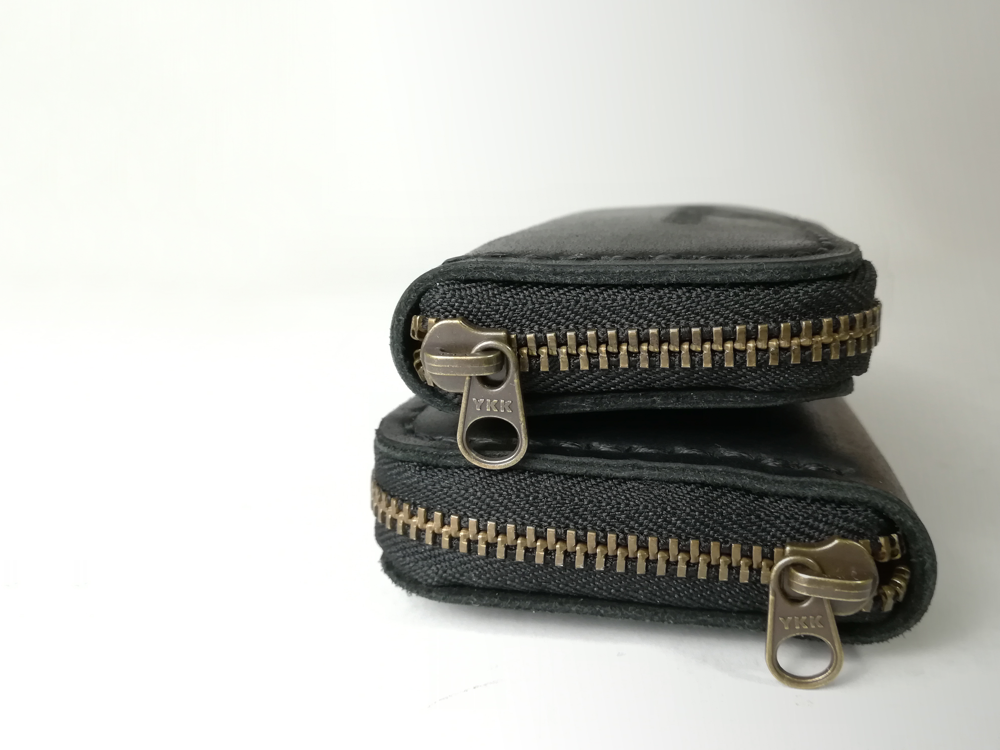
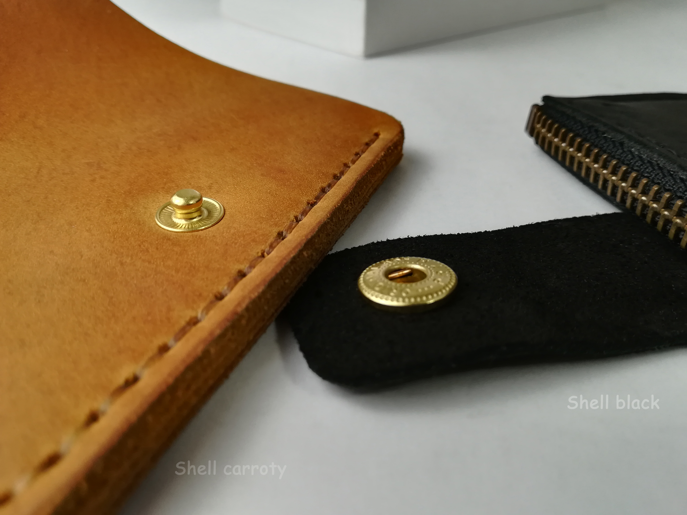
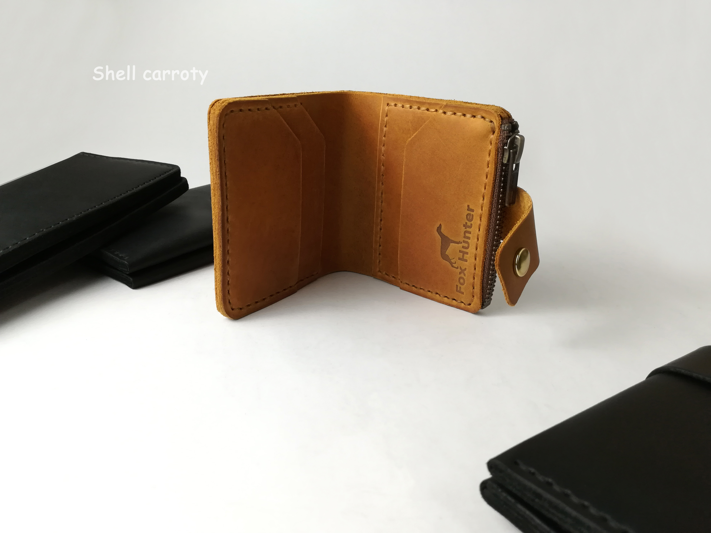

Уход за изделиями
- Тональные изменения, некоторые природные особенности, морщины или шрамы кожи не должны рассматриваться как дефекты;
- Не мочите, и не стирайте ваше изделие. При попадании воды — просто смахните её и просушите изделие на воздухе. Не сушите изделие при использовании температуры, нагрев может вызвать обезвоживание кожи и деформацию изделия;
- Вытирайте поверхность кожи с осторожностью, используя чистую и мягкую ткань;
- Некоторые небольшие царапины могут быть уменьшены при деликатном массировании кожи к коже/замше;
- Вы можете использовать некоторые средства, созданные специально для ухода за кожей. При этом следуйте инструкциям производителя;
- Решаясь испробовать какое-то средство, пожалуйста, протестируйте его сперва на маленьком участке;
- По возможности, держите изделие дальше от химических и косметических средств, продуктов питания. Они могут нанести повреждения, которые будет сложно удалить;
- Не используйте для очистки химические средства, такие как ацетон, бензин, спирт и т.д. Такие средства могут нанести непоправимый ущерб изделию;
- Избегайте чрезмерного воздействия жары или прямого света. Храните ваше изделие в прохладном и сухом месте, когда оно не используется;
- Будьте внимательны при контакте со светлой одеждой, так как кожа может передать некоторое количество цвета. Позаботьтесь, чтобы избежать темного цвета одежды, способной окрасить кожу;